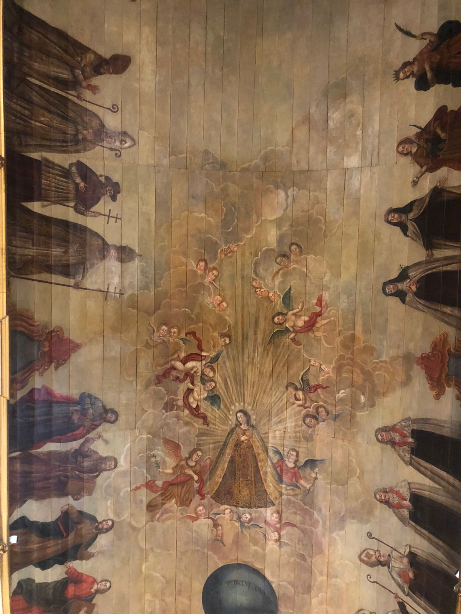
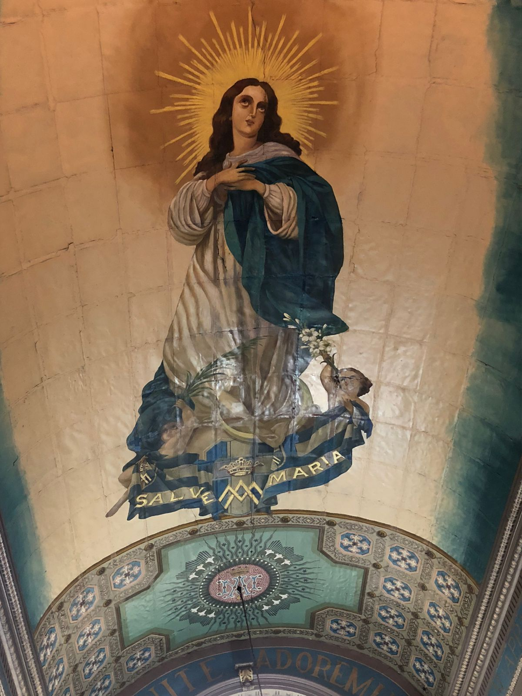
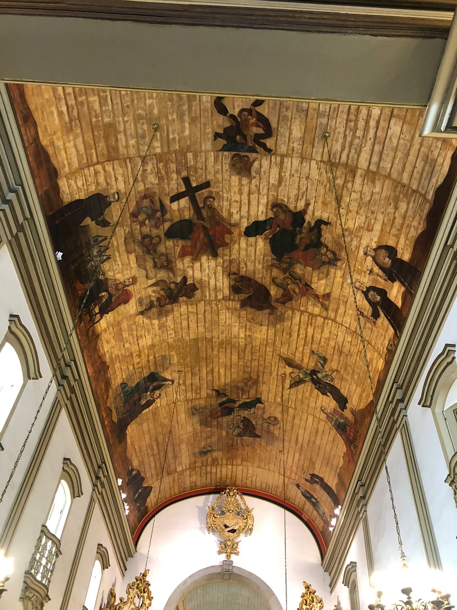
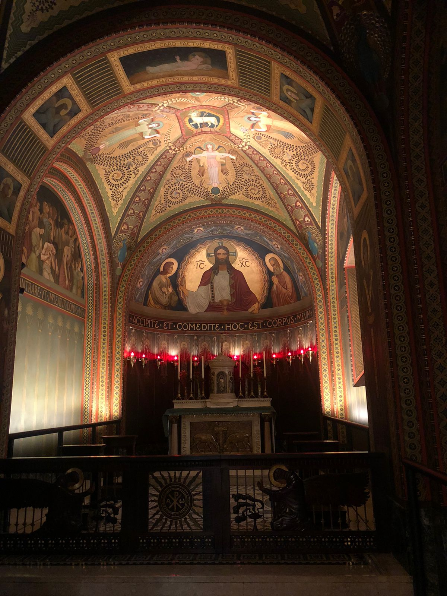

Esse é o meu primeiro site feito por conta própria, com HTML e CSS básico. Caso veja algum erro, peço que por favor, me avise no meu instagram: @anadutraoli.
A primeira igreja que visitamos foi ela e lá eu participei da minha primeira missa tridentina(totalmente em latim) de cara, fiquei encatada com tamanha beleza, era tudo tão bonito, calmo, realmente parecíamos que estavámos no céu. A pintura no teto é a coisa mais linda...
Quando entramos nessa igreja, nos deparamos com o Santíssimo Sacramento exposto, adoramos a Jesus, rezamos o terço, enquanto eu rezava o terço, admirava a decoração da igreja, era tudo tão brilhante! Logo após fazermos a nossa oração pessoal, seguimos para outra igreja.
Quando entramos nessa igreja, estava tendo missa, então não conseguimos admirar a igreja por completo, mas consiguimos registrar algumas decorações. O teto como sempre, era algo que eu poderia ficar admirando por horas!
Essa igreja também era linda, o teto como sempre chamando muito a minha atenção, sem contar com a construção das igrejas e em como cada detalhe foi muito bem pensado.
Ok, hummm... Como vou falar que essa é a minha igreja favorita agora? Ela é a igreja mais linda que eu já vi, as decorações, o teto, o clima, a iluminação.. TUDO é lindo! Infelizmente não pude tirar tantas fotos.
No momento em que entramos no Mosteiro, uma cerimônia matrimonial estava chegando ao fim. As pessoas eram tão elegantes, a noiva era tão linda, tinha um ar tão angelical e derrepente eu senti uma ENORME vontade de me casas naquela igreja.
Bom, encerro com essa igreja maravilhosa, espero muito que vocês tenham gostado. E lembre-se, esse site é apenas uma forma de praticar os meus estudos em programação, as fotos realmente são minhas, mas esse site não deve ser levado como um sério projeto. Até a próxima e fiquem com Deus!